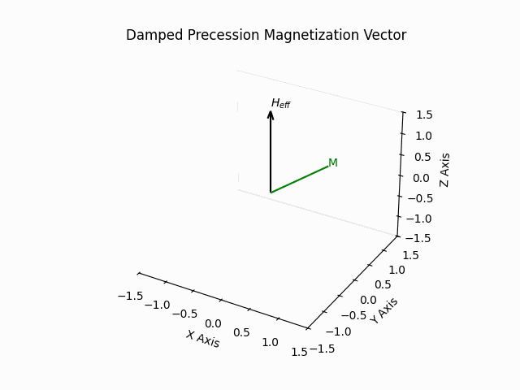
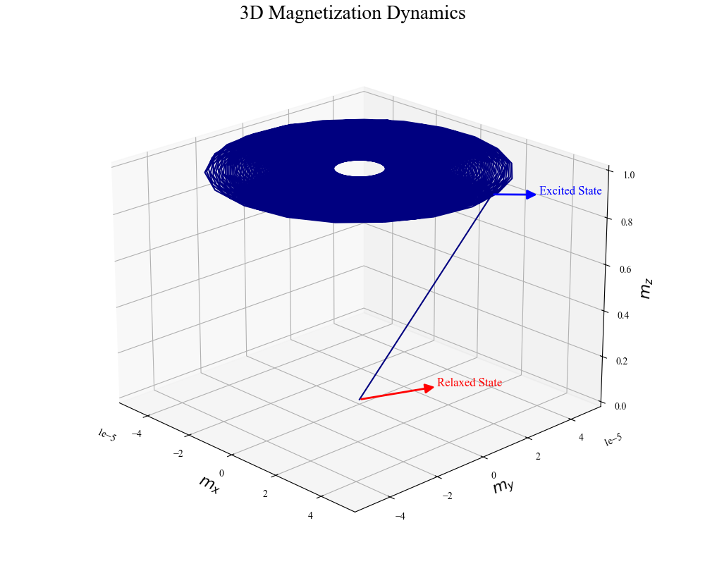
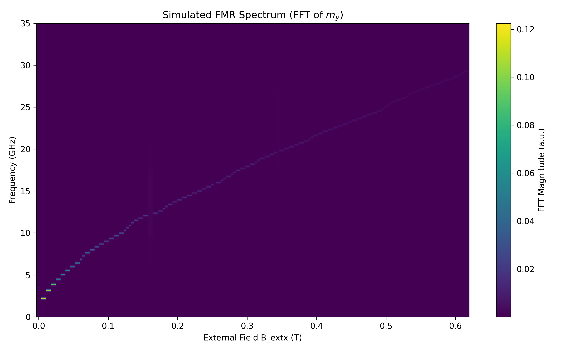
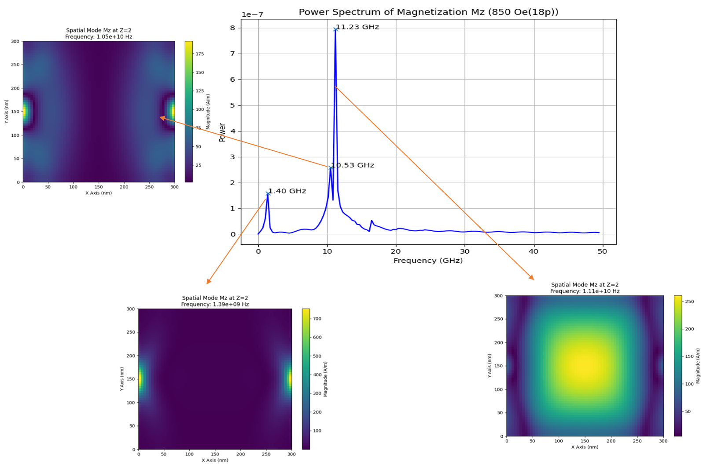

Project Gallery

Damping according to LLG equation
GIF showing damped precession of spin dynamics.

FMR Mode vs Spin Wave Mode
Uniform precession leads to FMR mode while non uniform precession gives rise to spin waves.

Simulation result from OOMMF
FMR mode in simulations is excited using a Sinc pulse.

Kittel Equation
2D mapping of power spectrum of FMR simulations

Identification of modes
Kittel mode corresponds to uniform excitation.